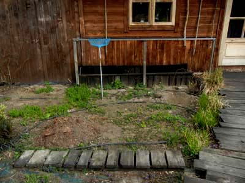
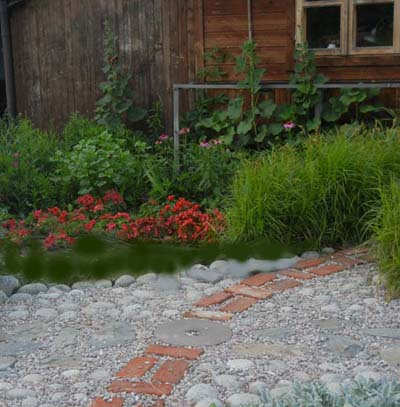
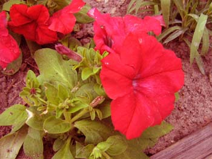
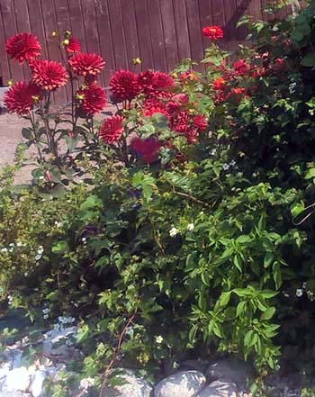
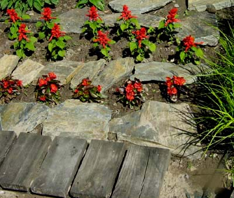
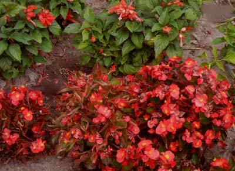
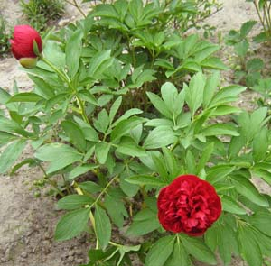

Tak to wyglądało, zanim postanowiłam zrobić tu czerwoną rabatkę.

A tak wczesną wiosną.


Teraz będzie o zakątku, w jakim wszystko kwitnie na czerwono.
To miejsce nazywa się Krwawa Marysia.
To miejsce nazywa się Krwawa Marysia.
Posadziłam tu głównie rośliny jednoroczne: begonie, szałwie, petunie i cynie.



To rabatka-niemowlę. Ma za sobą dopiero jedno lato. W rok 2019 rok wejdzie wzbogacona o nowe rośliny i ciekawszą kompozycję.